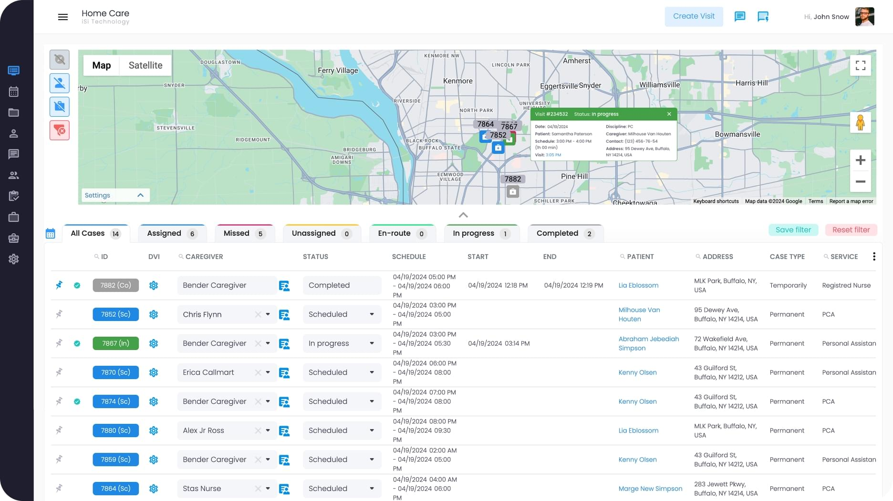

CareSync360 is your trusted partner for homecare agency software, helping increase efficiency, coordinate patient care, and improve communication between caregivers, clients, and the home office
With CareSync360, you can view client visits and history, complete with real-time oversight capability to verify that visits occurred and each element of the client’s care schedule is completed.
Imagine precise functionality to cover all client needs. Everything you need is in one place, from billing to a calendar, eligibility verifications, and even a referral processing function. We help streamline communications between back-office administrators, front-line caregivers, and your clients.
CareSync360 has software that’s easy to use, with user-intuitive interfaces and 24-hour support for troubleshooting, training, and questions.We offer an affordable solution, simplifying tasks like scheduling and billing and ensuring each client has the right support. You can get more done and focus on what really matters — your team and your clients. We put years of thought and consideration into developing our home care billing software, with input from real home care providers like you.
CareSync360’s software for homecare facilitates Medicaid, Medicare, and HIPAA compliance, with secure eligibility confirmation and approval, referral verification, and billing.
We use secure communication to protect sensitive client information and have multiple verification steps to keep client information private.
Schedule in-home visits, verify the appropriate services were provided, and make any necessary changes with a few clicks.
What can CareSync360 homecare management software do for you? No matter the size of your agency, we can customize your software solution to meet every need.
Electronic Medical Records (EMR) software technology makes client care and daily management a snap, with digital records and efficient retrieval and storage of client data. Caregivers can securely note changes in the client’s needs or condition or access changes in care instructions through the mobile app or in the office.
Electronic Medical Records (EMR) software technology makes client care and daily management a snap, with digital records and efficient retrieval and storage of client data. Caregivers can securely note changes in the client’s needs or condition or access changes in care instructions through the mobile app or in the office.
Electronic Medical Records (EMR) software technology makes client care and daily management a snap, with digital records and efficient retrieval and storage of client data. Caregivers can securely note changes in the client’s needs or condition or access changes in care instructions through the mobile app or in the office.
Electronic Medical Records (EMR) software technology makes client care and daily management a snap, with digital records and efficient retrieval and storage of client data. Caregivers can securely note changes in the client’s needs or condition or access changes in care instructions through the mobile app or in the office.
Electronic Medical Records (EMR) software technology makes client care and daily management a snap, with digital records and efficient retrieval and storage of client data. Caregivers can securely note changes in the client’s needs or condition or access changes in care instructions through the mobile app or in the office.
Electronic Medical Records (EMR) software technology makes client care and daily management a snap, with digital records and efficient retrieval and storage of client data. Caregivers can securely note changes in the client’s needs or condition or access changes in care instructions through the mobile app or in the office.
As an in-home caregiving service, you know that the most important resource is your people. CareSync360 streamlines the job candidate hiring and vetting process, giving you more time to spend with viable candidates for your open positions.
Clients and caregivers can communicate more easily through the CareSync360 mobile app. It’s compatible with Android and iOS and has a user-intuitive interface. Users can monitor who is in the home on visits and who is delayed or easily bill clients according to the services provided.
Users can access all payers, from Medicaid to Tricare and most private insurers.Our entire home care provider software is optimized for mobile use on a smartphone or tablet.
Caregivers can access care plans, make updates, leave client notes, and even complete OASIS, Non-OASIS, and Non-Skilled assessments.
Communicate securely through email or text in the app, protecting sensitive client data and health information.
Caregivers can also log travel time and mileage, helping you more accurately track expenses.
Modern software solutions help you better track caregiver visits, home services provided, and billing, reducing errors and better serving your clients.
With digital records and a coding module, we take the guesswork out of billing. The mobile app’s scheduling component keeps you up to date with scheduling and communicates no-shows, cancellations, or delays in appointments.